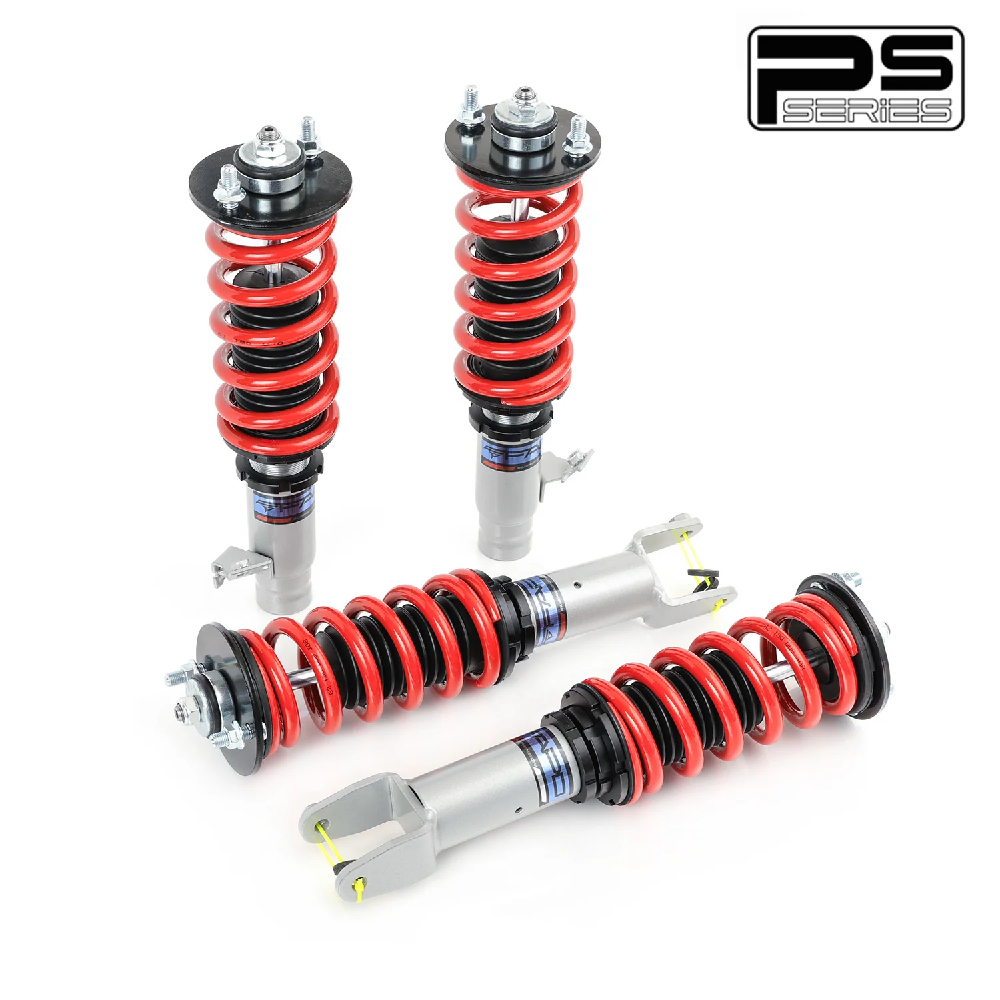

1 / 12Zawieszenie gwintowane do Honda Civic 6th Gen 1996-2000 5th Gen 1992-1995 Acura Integra 3rd Gen 1994-2001 PS002410
Zastosowanie: Honda Civic 6. generacji (widelec tylny) EK/EM/DC2/EJ 1996-2000 Honda Civic 5. generacji (widelec tylny) EG6/EH 1992-1995 Honda Del Sol EG 1993-1997 Acura Integra 3. generacji (widelec tylny) nie obejmuje typu R DB/DC 1994-2001 Zawartość zestawu: Gwinty przednie × 2 szt Gwinty tylne × 2 szt Klucz × 2 szt Cechy produktu: Jednorurowa konstrukcja amortyzatora zapewniająca większą pojemność oleju i gazu Re…
Application: Honda Civic 6th Gen(Rear Fork) EK/EM/DC2/EJ 1996-2000 Honda Civic 5th Gen(Rear Fork) EG6/EH 1992-1995 Honda Del Sol EG 1993-1997 Acura Integra 3rd Gen (Rear Fork) excludes Type R DB/DC 1994-2001 Package Includes: Front coilovers × 2 pcs Rear coilovers × 2 pcs Wrench × 2 pcs Features: Mono-tube shock design providing larger capacity of oil and gas Adjustable ride height Adjustable pre-load spring tension Hi Tensile performance spring - tested over 600,000 cycles with less than 0.04% distortion; special surface treatment improves durability and performance All inserts come with fitted rubber boots to protect the damper and keep clean Improve your handling performance without sacrificing comfortable ride A fast and affordable way to easily upgrade your car's appearance Easy installation with right tools Ideal for any track, drift, fast road and daily driving The accessories shown in the photos are included Default 1-year warranty for any manufacturing defect, upgrade to 2 years with our Extended Warranty Program Technical Specifications: Spring rate Front: 10 kg/mm Spring rate Rear: 8 kg/mm Adjustable height: Yes Adjustable camber plate: NO Adjustable damper: Non Adjustable Damper Force Warranty All items carry a standard 1-year warranty from the date of purchase. Proof of purchase is required and providing your order number helps. To speed up warranty claims, please provide images and detailed documentation. Pictures and videos are usually sufficient; defective items typically do not need to be returned. Occasionally, additional information may be requested to confirm the issue and improve support.
1399,99 PLN
Opis produktu
Zastosowanie:
- Honda Civic 6. generacji (widelec tylny) EK/EM/DC2/EJ 1996-2000
- Honda Civic 5. generacji (widelec tylny) EG6/EH 1992-1995
- Honda Del Sol EG 1993-1997
- Acura Integra 3. generacji (widelec tylny) nie obejmuje typu R DB/DC 1994-2001
Zawartość zestawu:
- Gwinty przednie × 2 szt
- Gwinty tylne × 2 szt
- Klucz × 2 szt
Cechy produktu:
- Jednorurowa konstrukcja amortyzatora zapewniająca większą pojemność oleju i gazu
- Regulowana wysokość jazdy
- Regulowane napięcie sprężyny wstępnej
- Sprężyna o dużej wytrzymałości na rozciąganie — testowana przez 600 000 cykli przy zniekształceniu mniejszym niż 0,04%; specjalna obróbka powierzchni poprawia trwałość i wydajność
- Do wszystkich wkładek dołączone są gumowe buty chroniące amortyzator i utrzymujące je w czystości
- Popraw swoje właściwości jezdne, nie rezygnując z komfortu jazdy
- Szybki i niedrogi sposób na łatwą poprawę wyglądu Twojego samochodu
- Łatwa instalacja przy użyciu odpowiednich narzędzi
- Idealny na każdy tor, drift, szybką drogę i codzienną jazdę
- W zestawie akcesoria widoczne na zdjęciach
- Standardowa roczna gwarancja na każdą wadę produkcyjną, możliwość rozszerzenia do 2 lat w ramach naszego programu rozszerzonej gwarancji
Dane techniczne:
- Twardość sprężyny Przód: 10 kg/mm
- Twardość sprężyny Tył: 8 kg/mm
- Regulowana wysokość: Tak
- Regulowana płyta pochylenia: NIE
- Regulowany amortyzator: Nieregulowana siła amortyzatora
Gwarancja
Wszystkie produkty objęte są standardową roczną gwarancją liczoną od daty zakupu. Wymagany jest dowód zakupu. Pomocne może okazać się podanie numeru zamówienia. Aby przyspieszyć roszczenia gwarancyjne, prosimy o przesłanie zdjęć i szczegółowej dokumentacji. Zwykle wystarczą zdjęcia i filmy; Wadliwe elementy zazwyczaj nie wymagają zwrotu. Czasami może zostać poproszony o dodatkowe informacje w celu potwierdzenia problemu i ulepszenia wsparcia.
Application:
- Honda Civic 6th Gen(Rear Fork) EK/EM/DC2/EJ 1996-2000
- Honda Civic 5th Gen(Rear Fork) EG6/EH 1992-1995
- Honda Del Sol EG 1993-1997
- Acura Integra 3rd Gen (Rear Fork) excludes Type R DB/DC 1994-2001
Package Includes:
- Front coilovers × 2 pcs
- Rear coilovers × 2 pcs
- Wrench × 2 pcs
Features:
- Mono-tube shock design providing larger capacity of oil and gas
- Adjustable ride height
- Adjustable pre-load spring tension
- Hi Tensile performance spring - tested over 600,000 cycles with less than 0.04% distortion; special surface treatment improves durability and performance
- All inserts come with fitted rubber boots to protect the damper and keep clean
- Improve your handling performance without sacrificing comfortable ride
- A fast and affordable way to easily upgrade your car's appearance
- Easy installation with right tools
- Ideal for any track, drift, fast road and daily driving
- The accessories shown in the photos are included
- Default 1-year warranty for any manufacturing defect, upgrade to 2 years with our Extended Warranty Program
Technical Specifications:
- Spring rate Front: 10 kg/mm
- Spring rate Rear: 8 kg/mm
- Adjustable height: Yes
- Adjustable camber plate: NO
- Adjustable damper: Non Adjustable Damper Force
Warranty
All items carry a standard 1-year warranty from the date of purchase. Proof of purchase is required and providing your order number helps. To speed up warranty claims, please provide images and detailed documentation. Pictures and videos are usually sufficient; defective items typically do not need to be returned. Occasionally, additional information may be requested to confirm the issue and improve support.
FAPO Polska
Ten produkt obsługujemy lokalnie
Autoryzowana obsługa
FAPO Polska prowadzi katalog, kontakt i zamówienia bez odsyłania klienta do zewnętrznych sklepów.
Dobór po aucie
Sprawdzamy dopasowanie produktu do pojazdu, rocznika i wersji przed finalizacją zamówienia.
Wsparcie po zakupie
Masz kontakt w Polsce w sprawach zamówień, wysyłki, gwarancji i zwrotów.